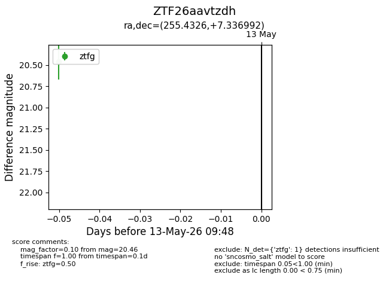
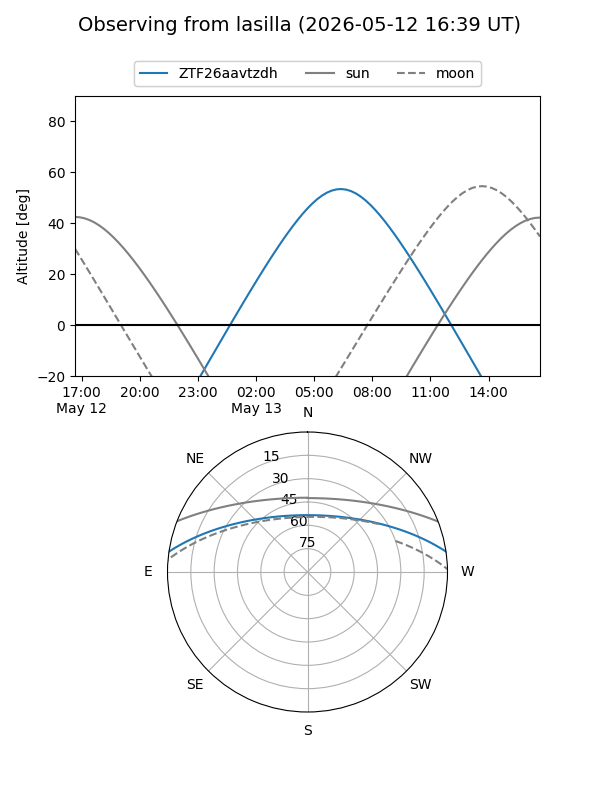
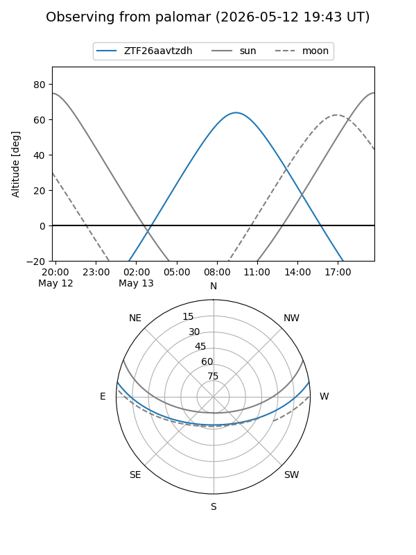

ZTF26aavtzdh
Target ZTF26aavtzdh at 2026-05-13 09:50
Aliases and brokers:
FINK: link
Lasair: link
ALeRCE: link
alt names
ZTF26aavtzdh (ztf,fink_ztf)
Coordinates:
equatorial (ra, dec) = 255.4326,+7.33699
equatorial (HMS+DMS) = 17:01:43.83,+07:20:13.17
galactic (l, b) = (26.7948,+27.69839)
Flags:
Photometry:
last ztfg=20.46
1 ztfg detections
Lightcurve

Visibility


Additional plots